Assignment 3: Getting started with 3D printing
Assembling my Ender Pro 3D printer took around 2.5 to 3 hours. I followed the tutorial provided on Canvas assignment to build and used these files to level the bed.

I releveled around 3 times to get the squares printed correctly using the source files.
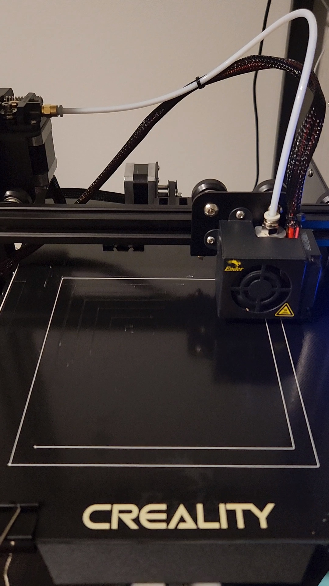After that came the real challenge. I was able to make the 2cm edge cube in low quality, which was great news.
However, I was not able to get the standard quality and super quality. After trying out the low quality print again, I realized my printer was struggling with the finer, higher quality prints due to temperature. I tried cleaning the bed, releveling 5 more times, but it turns out I just needed to increase temperature on the nozzle (215 celsius), and bed (75 celsius) and then I was able to print the standard quality. For super quality, I was also having issues with the same temperatures applied for standard quality, so I increased the nozzle to 230 celsius, and bed to be at 75 celsius. After half way through (around 35 minutes), the print was moving around in the air again. So I went to the MILL, ended up having similar issues with the PRUSA printer. A MILL staff helped me troubleshoot, lowering the nozzle and putting some glue on the bed. Then, I was able to finally print normally.
Here are the estimations and actual times for the cube prints.
| Printed object | Estimated time on printing (min) | Actual time took on printing (min) | Measured width (mm) | Measured height (mm) | Measured depth (mm) |
|---|---|---|---|---|---|
| 2cm edge cube on low quality | 20 | 23 | 20.03 | 20.26 | 19.70 |
| 2cm edge cube on standard quality | 26 | 32 | 19.69 | 20.28 | 20.04 |
| 2cm edge cube on super quality | 50 | NOTE: stopped after 35 min | NA | NA | NA |
| 2cm edge cube on low quality with a concentric top and bottom layer | 12 | 14 | 20.11 | 20.31 | 20.09 |
Here are the printed cubes in this order: 2cm edge cube on low quality, 2cm edge cube on standard quality, 2cm edge cube on super quality, and 2cm edge cube on low quality with a concentric top and bottom layer.
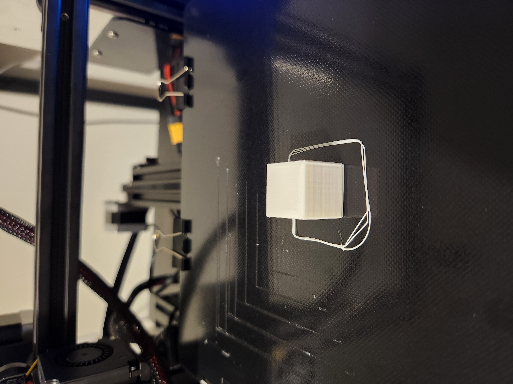 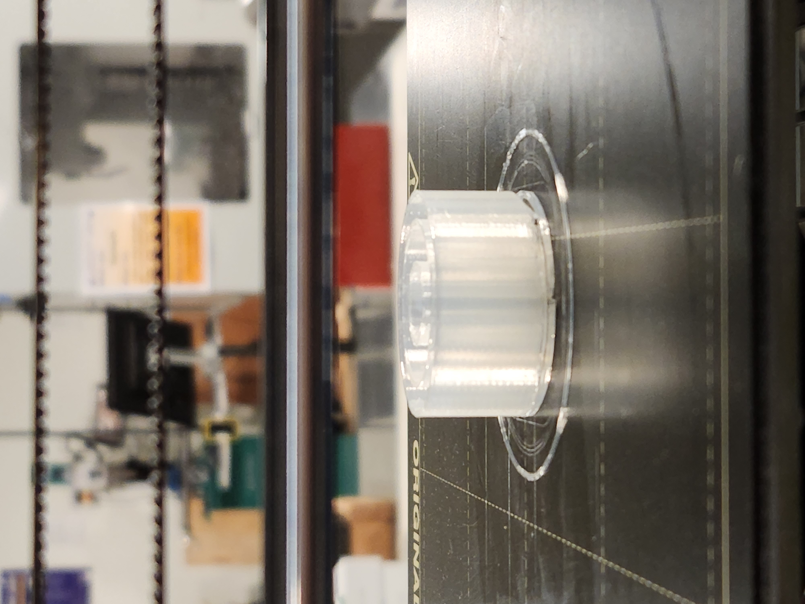 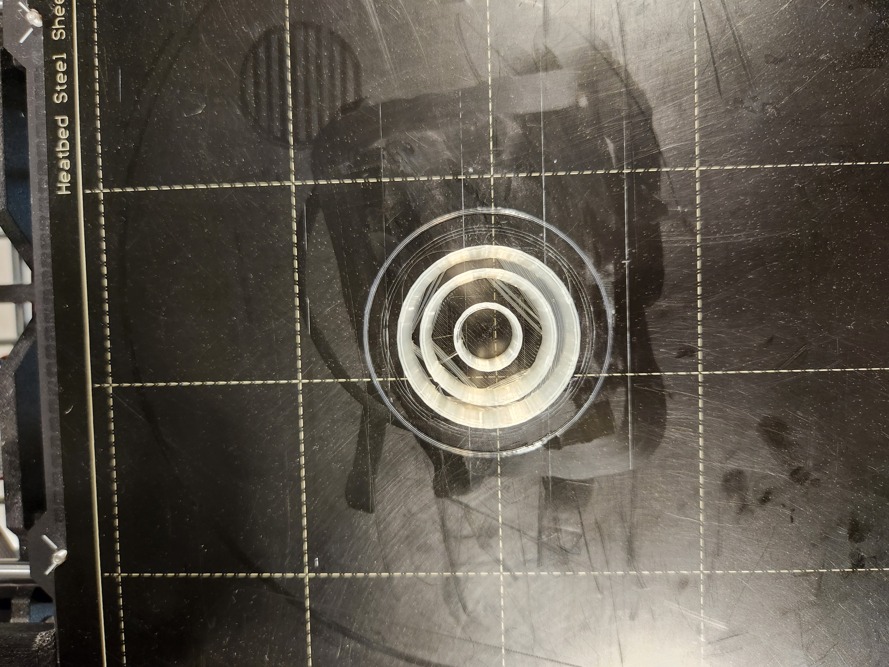 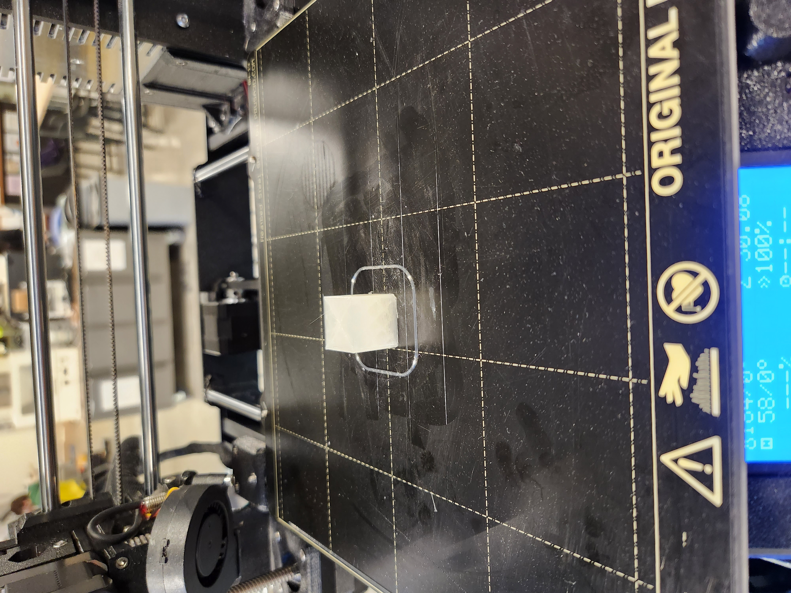Here are the estimations and actual times for the tube prints.
| Printed object | Estimated time on printing (min) | Actual time took on printing (min) | Measured diameter (mm) | Measured height (mm) | Measured wall thickness (mm) |
|---|---|---|---|---|---|
| 3cm diameter + 3cm height tube with single extrusion wall thickness | 18 | 20 | 30.76 | 30.06 | 1.04 |
| 3cm diameter + 3cm height tube with doubles extrusion wall thickness | 18 | 20 | 31.11 | 30.06 | 1.05 |
Here are the printed tubes in this order from left to right: 3cm diameter + 3cm height tube with single extrusion wall thickness and 3cm diameter + 3cm height tube with doubles extrusion wall thickness.

Here are the estimations and actual times for the cylinder prints.
| Printed object | Estimated time on printing (min) | Actual time took on printing (min) | Measured diameter (mm) | Measured height (mm) |
|---|---|---|---|---|
| 3cm diameter cylinder, 1.5cm height exported with a 0.1mm tolerance | 24 | 24 | 29.94 | 15.28 |
| 3cm diameter cylinder exported with a 0.001mm tolerance | 24 | 25 | 30.05 | 15.40 |
| 3cm diameter cylinder, 1.5cm height with special mode "spiralize outer contour" | 13 | 15 | 29.41 | 15.34 |
| 3cm diameter cylinder, 1.5cm height printed on its side with supports on | 18 | 19 | 29.93 | 15.05 |
Here are the printed cylinders in this order: 3cm diameter cylinder exported with a 0.1mm tolerance, 3cm diameter cylinder exported with a 0.001mm tolerance, 3cm diameter cylinder with special mode "spiralize outer contour", and 3cm diameter cylinder printed on its side with supports on.
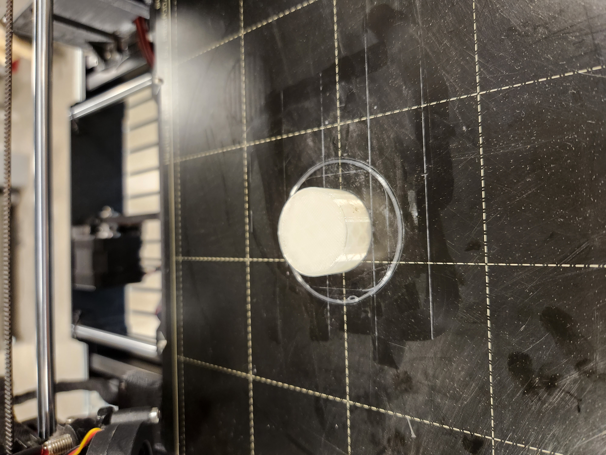 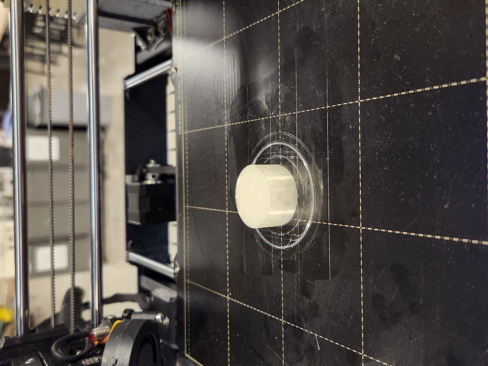 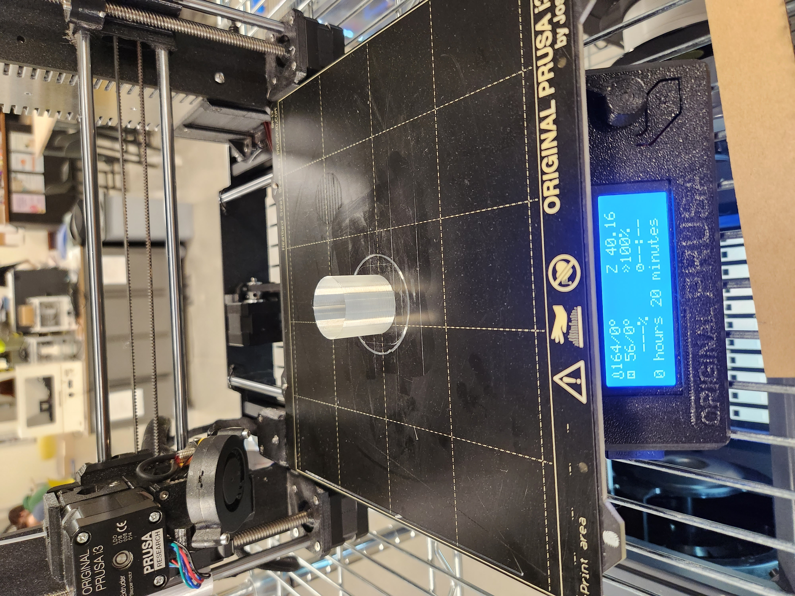 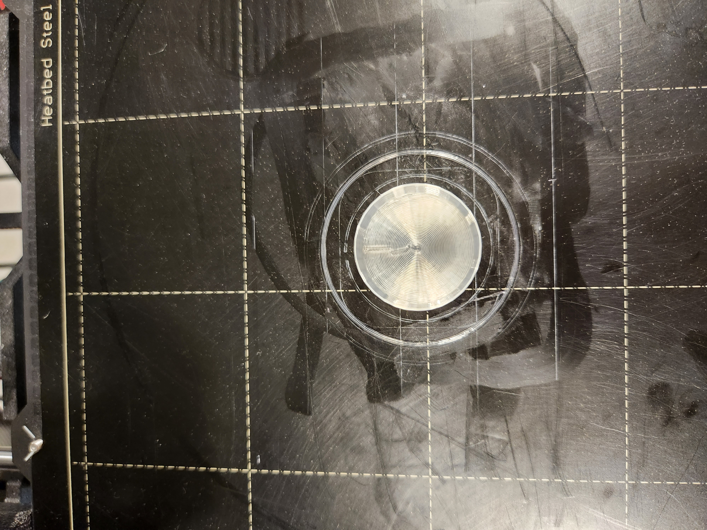 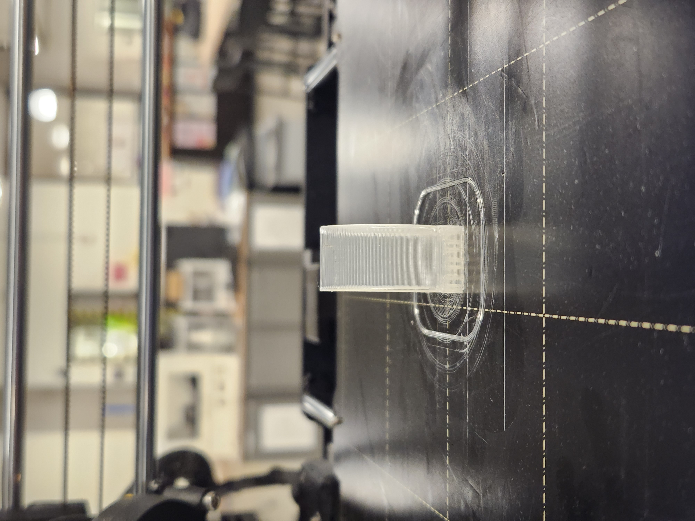 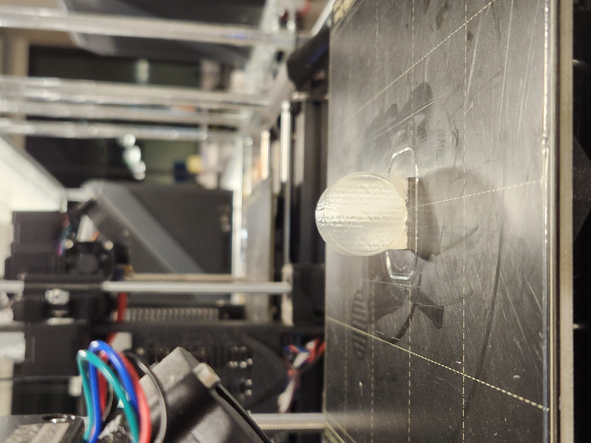Next, I made a nested object on rhino. I made the 3 tubes to be printed together. The diameters from smallest to biggest were 15mm, 30mm, and 40mm. The heights were all 20mm and thickness was 1mm. Estimated time to print was 30 min at low quality. Since the parts are not attached, my measurements will not be accurate. Instead, I took a picture of the final outcome. Actual time to print was 31 minutes. As you can tell in the picture, some parts were not printed perfectly due to filament consistency, but not sure how to make sure that doesn't happen in the future yet...

Source files
- A3 cube rhino file
- A3 tube rhino file
- A3 cylinder rhino file
- A3 nested object rhino file
- All Gcode files
Acknowledgement--thanks everyone!
- Following conversations on Discord was super helpful: Junchao, Danli, Jessica, Jisu
- Mill staff who was on shift on 10/24/22. He helped me bring down the nozzle and get unblocked on PRUSA printer.